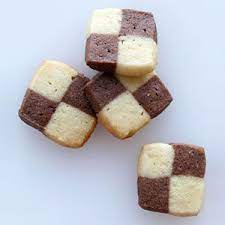

French Sable Cookies

These French shortbread cookies from America's Test Kitchen are simple to make and fun to shape. I typically prepare both chocolate and vanilla doughs to make checkerboard cookies to give as gifts to loved ones.
Ingredients
- 10 tbsp unsalted butter, softened (1 1/4 sticks)
- 1/3 cup granulated sugar
- 1/4 tsp table salt
- 1 tsp vanilla extract
- 1 1/2 cups all-purpose flour
Steps
- In bowl of stand mixer fitted with paddle attachment, beat butter, sugar, and salt on medium speed until light and fluffy, scraping down sides of bowl and beater with rubber spatula as needed. Turn mixer to low, add vanilla, and mix until incorporated. Stop mixer; add flour and mix on low speed until just combined, about 30 seconds. Using rubber spatula, press dough into cohesive mass.
- Divide dough in half. Roll each piece into log about 6 inches long and 1 3/4 inches in diameter. Wrap each log in parchment paper and twist ends to seal and firmly compact dough into tight cylinder. Chill until firm, about 1 hour.
- Adjust oven racks to upper-middle and lower-middle positions. Heat oven to 350 degrees. Line 2 rimmed baking sheets with parchment paper. Using a chef's knife, slice dough int o1/4-inch-thick rounds, rotating dough so that it won't become misshapen from weight of knife. Place cookies 1 inch apart on baking sheets.
- Bake until centers of cookies are pale golden brown with edges slightly darker than centers, about 15 minutes, rotating baking sheets front to back and top to bottom halfway through baking. Cool cookies on baking sheet 5 minutes.
Chocolate Sables
Reduce flour to 1 1/3 cups and add 1/4 cup Dutch processed cocoa powder.
Recipe taken from America's Test Kitchen.
Back to top of page
Home